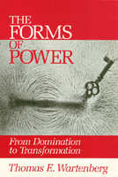

A field theory of power that rejects many of the reigning assumptions made about power
A field theory of power that rejects many of the reigning assumptions made about power


 A field theory of power that rejects many of the reigning assumptions made about power
A field theory of power that rejects many of the reigning assumptions made about power

|  |
The Forms of PowerFrom Domination to TransformationThomas E. Wartenbergpaper EAN: 978-0-87722-905-6 (ISBN: 0-87722-905-8) |
"[This] excellent typology of forms of social power will be welcomed by all social theorists.... Feminist theorists in particular should find this book an important contribution to their thinking about how male domination is exercised even when immediate interactions between men and women appear harmonious."
—Iris M.Young
The concept of power has played a fundamental role in critical reflection about society. However, even the most basic questions concerning the concept of power have been subject to ongoing debate. Examining the ways in which philosophers from Plato onwards have used the concept of power, Wartenberg develops a field theory of power that rejects many of the reigning assumptions made about power. Incorporating the insights of feminist theorists, he argues that power has a positive as well as a negative role to play in social relations.
Arguing that an adequate theory of power needs to recognize a plurality of forms of power, the author uses the example of teaching to show the multiple ways in which power is a factor in social relationships. As an important corrective to the consensual and domination models, Wartenberg�s field theory gives social theorists and philosophers a more adequate tool for thinking about the nature of power.
"An excellent study of the many meanings of power. The study is a strong start at filling a void in contemporary social theory...."
—Choice
"The theory of power that Wartenberg argues for in this book is carefully constructed, with perceptive analyses and fresh insights... Certainly the current debates will profit from the clarity of his criticisms and of his own constructive position.... a major systematic treatment that is ambitious in its scope and original in its results."
—David Hoy, University of California, Santa Cruz
"This is going to be a very important book and a very successful one. It makes major contributions to the theory of power and moves the whole debate to a new level of insight and sophistication. It is extremely lucid and smooth. This book will become a central text for discussion of power for many years to come. It represents a major advance over all the previous work that I am familiar with."
—Richard Schmitt, Professor of Philosophy, Brown University
Acknowledgments
Introduction
1. The Problematics of Power
Essentially Contested Concepts •
The Meanings of "Power" •
Analyzing Power-Over •
Conclusion
2. The Consensual Model of Power
The Ascendancy of Power •
Situating Arendt�s View •
The Plausibility of the Consensual Model •
Power and Violence •
Conclusion
3. The Power Debate
Ontology and Power Theory •
The Power Debate •
The Basis of the Power Debate •
Conclusion
4. Power-Over us Constraint
The Ontology of a Social Field •
Terminological Remarks •
The Attribution of Power-Over as a Discursive Practice •
The Ontology of Human Agency •
The Definition of Power-Over •
Power and Freedom •
Conclusion
5. The Articulation of Power
Force •
Coercive Power •
The Productivity of Coercion •
Influence and Its Forms •
Manipulation •
The Typology of Power
6. Structures of Domination
Analyzing "Domination" •
Lordship and Bondage: Hegel on Domination •
Marx and the Hegelian Conception •
The Logic of "Good": Nietzsche on Domination •
Toward a Theory of Domination •
Appendix: Foucault on Domination
7. Situated Social Power
Grading and the Student-Teacher Relationship •
Advantages of the Situated Conception •
The Concept of a Social Alignment •
Some Consequences for Social Theory •
Conclusion
8. Toward a Dynamic Conception of Social Power
Power and Temporality •
Constraints on the Dominant Agent •
The Power of the Subordinate Agent •
Alternative Alignments and Social Change •
The Power of a Teacher Reconsidered •
Conclusion
9. Transformative Power
Mothering and Male Domination •
Reevaluating Mothering •
Transformative Power and Social Theory •
Criticisms of the Feminist Theorists of Power •
Conclusion
10. Transformative Power and Social Domination
Understanding Socrates •
The Problematics of Transformative Power •
The Superposition of Power Relationships •
Power in Plurality
Notes
Bibliography of Works Cited
Index
Thomas E. Wartenbert is Associate Professor of Philosophy at Mount Holyoke College.
© 2015 Temple University. All Rights Reserved. This page: http://www.temple.edu/tempress/titles/638_reg.html.